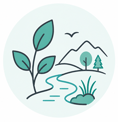
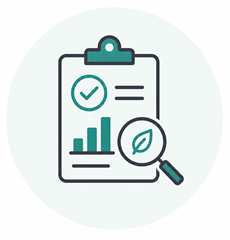
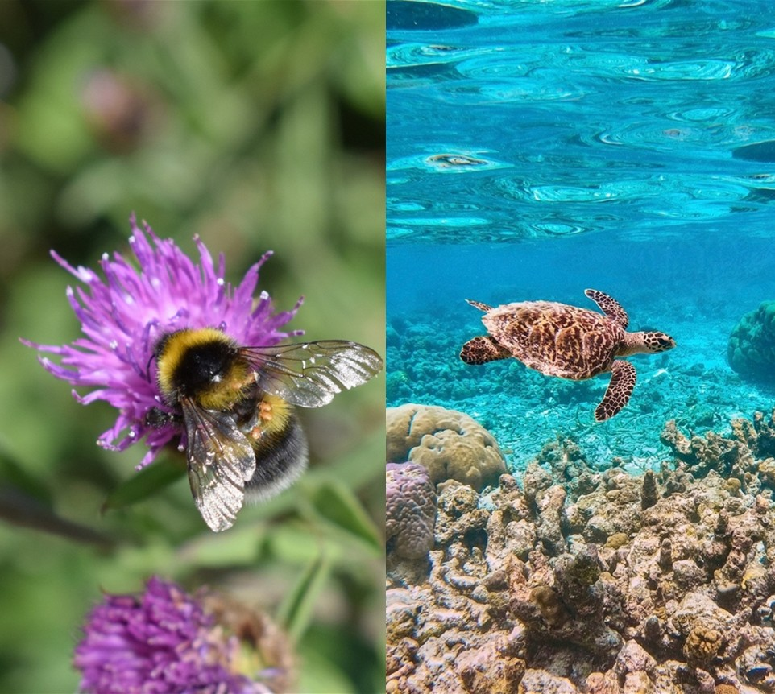
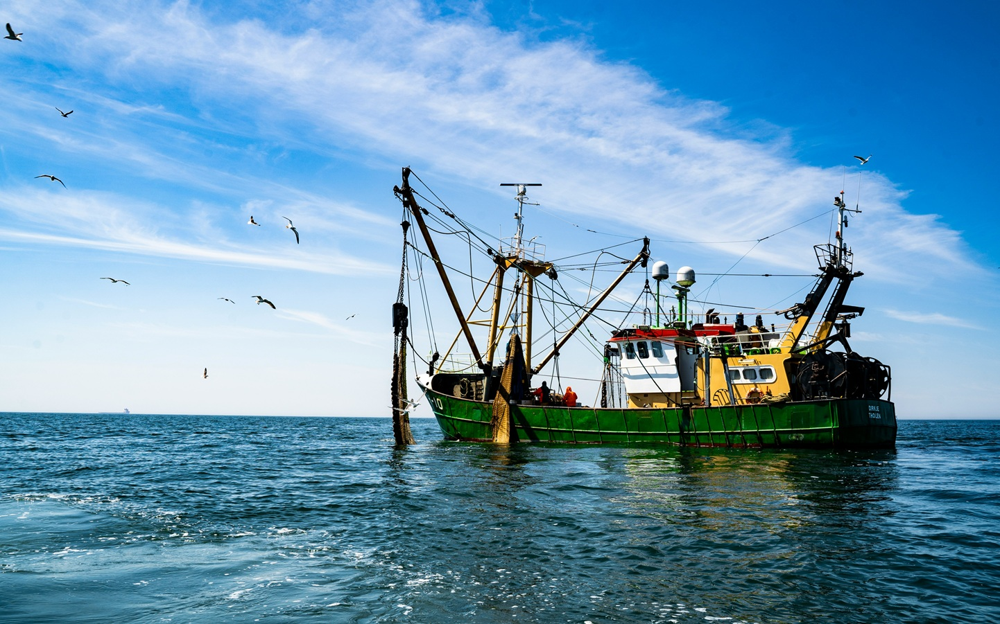

Ecological Systems
Research. Ecological surveys, field studies and experiments.
Advice. Evidence-based input for habitat management and conservation planning.
Mapping. GIS and spatial analysis to understand ecological patterns.
Services
We help organisations understand, protect and restore nature through rigorous research, careful analysis and practical project support across land, ocean and people.

Research. Ecological surveys, field studies and experiments.
Advice. Evidence-based input for habitat management and conservation planning.
Mapping. GIS and spatial analysis to understand ecological patterns.
Insight. Surveys, interviews and focus groups to understand attitudes and behaviours.
Engagement. Support for community engagement, collaboration and capacity building.
Inclusion. Approaches that better reflect people’s experiences and needs.

Evidence. Reviews, synthesis, reporting and clear outputs.
Data. Analysis, interpretation and communication of complex datasets.
Development. Scientific input for proposals, programmes and delivery.
Detailed services
The examples below show the kinds of work we provide, from focused pieces of research and analysis to wider scientific input for project development and delivery.
We design and deliver ecological research that helps organisations understand species, habitats and pressures on nature, across both land and ocean systems.
Our experience includes:

We use social research to understand how people think about, value and interact with nature, helping conservation become more effective, inclusive and grounded in real experience.
We can support:

We help organisations make sense of ecological, environmental and social data, turning complex datasets into clear evidence, maps and practical insight.
We can support:

We review and synthesise scientific evidence so organisations can make better use of existing knowledge and understand what it means for conservation practice, policy or funding.
We can support:

We provide scientific input for proposals, partnerships and programmes, helping organisations turn strong conservation ideas into fundable, deliverable work.
We can support:

If what you need is not listed here, we would still be happy to talk it through. We can help you work out what kind of evidence, analysis or support would be most useful.
Get in touch